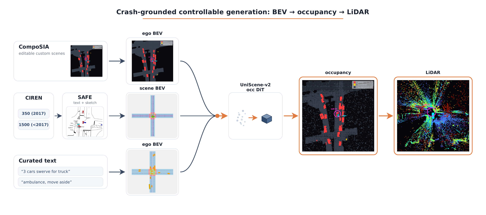
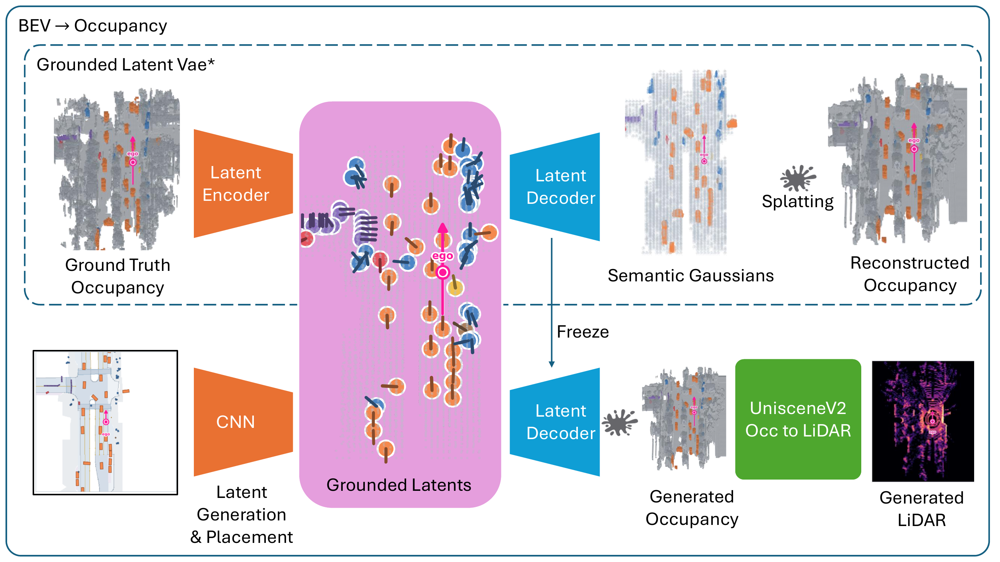

Autonomous vehicle behavior in emergency and rare situations is a well documented challenge, with some of the most concerning instances being ambulance obstruction. Yet the sensor data needed to study these long-tail events at scale is exactly what their rarity makes scarce. We propose RareOcc (ROCC), a system that generates realistic 3D occupancy and LiDAR for customizable long-tail situations and documented vehicular crashes; to our knowledge it is the first pipeline to produce sensor-level occupancy and LiDAR for crash-grounded, editable out-of-distribution driving scenes, extending the long tail of training data by generation rather than by collection.
ROCC uses a bird's-eye-view (BEV) layout as a shared intermediary that three interchangeable methods write to (CIREN-based crash recreation, LLM-based behavior specification, and CompoSIA-based real-scene editing) and lifts it to occupancy with an entity-grounded generator that places each agent from its specified box and replaces the diffusion stage of prior occupancy-centric pipelines. On held-out nuPlan-Occ frames it raises foreground occupancy mIoU from 18.1 to 48.5 over the released UniScene-v2 generator while both autoencoders share a comparable reconstruction ceiling, stays stable on denser frames where that baseline degrades to 9.5, and holds at 49.3 across the complete validation split, where UniScene-v2's own published score is 32.2; it also preserves rare agents under scene edits the baseline drops.

Figure 1. Crash-grounded controllable generation. Three authoring front-ends — editable custom scenes, crash reconstructions, and curated text — produce an ego-centric bird's-eye-view layout, which an occupancy DiT turns into 3D semantic occupancy and, in turn, LiDAR.
Natural-language prompts drive a traffic simulator that emits the BEV layout — full control over agents, maneuvers, and road type.
Reconstructs real crash reports into vehicle trajectories, recovering long-tail collision geometry from structured accident descriptions.
Edits real recorded scenes (cut-ins, lane changes) on the true map, warping agents while keeping the surrounding world consistent.

Figure 2. A grounded latent VAE (top) encodes ground-truth occupancy into grounded latents decoded via semantic Gaussians. At generation time (bottom) a CNN maps a BEV layout to those latents, which the frozen decoder turns into occupancy, and an occupancy-to-LiDAR model into a point cloud.
The interactive demo shows 22 curated scenarios across the three front-ends, each as input → 2D BEV motion → 4D occupancy → 4D LiDAR (occupancy is a 200×200×16 voxel grid, per-frame dynamics, each frame decoded independently; LiDAR is rendered as an interactive point cloud). Custom scenes add a World-frame / Ego-centric view toggle.